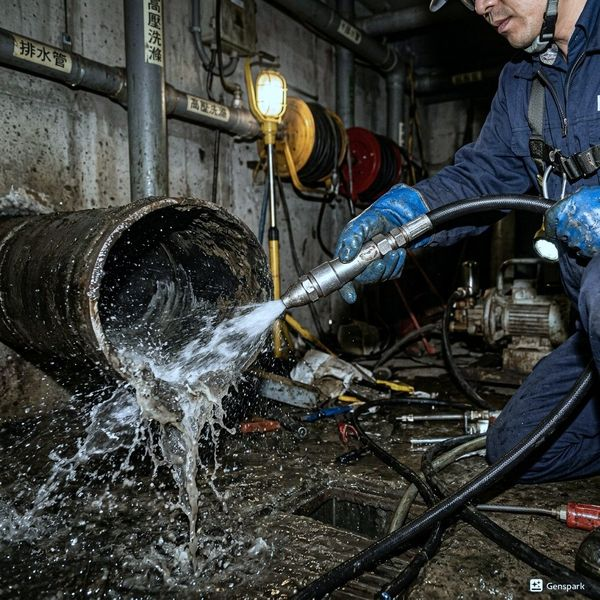
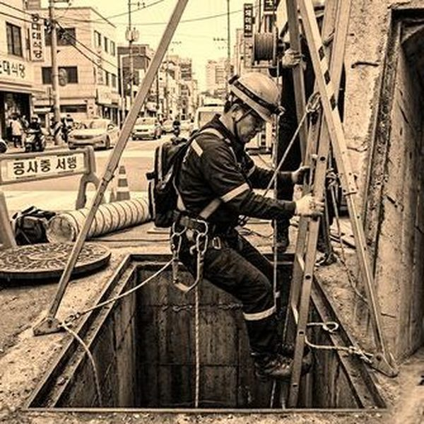
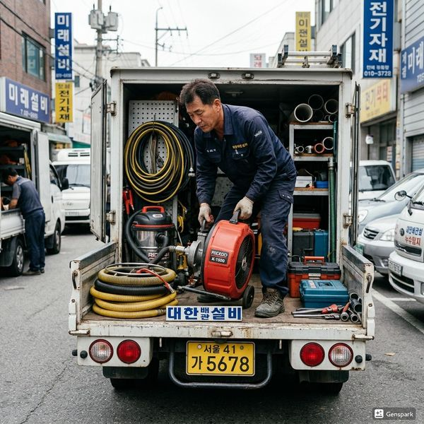

세면대 배수가 느려지는 주요 원인
세면대 배수 불량의 가장 흔한 원인은 머리카락과 비누 찌꺼기의 결합물입니다. 머리카락이 배수구 트랩에 걸리고, 여기에 비누나 치약 성분이 결합하면 점성이 높은 덩어리가 되어 배관을 서서히 막습니다. 두 번째는 팝업 배수구의 기계적 고장으로, 팝업 레버가 완전히 열리지 않아 배수 속도가 느린 경우입니다. 세 번째는 P트랩 내부의 스케일 축적이며, 네 번째는 공용 배관의 통기 불량입니다. 통기관이 막히면 배수 시 공기가 유입되지 않아 '보글보글' 소리와 함께 배수가 느려집니다. 다섯 번째는 배관 자체의 노후화입니다.

원인별 세면대 배수 해결 방법
머리카락 막힘은 배수구 덮개를 분리하고 핀셋이나 배수구 청소 도구로 제거할 수 있습니다. 팝업 배수구 문제는 하부 연결봉을 조정하면 해결됩니다. 그러나 P트랩 내부 스케일이나 통기 불량, 배관 노후화는 전문 장비가 필요합니다. 제우스시설관리는 드레인 기계와 고압세척기로 배관 내부를 완벽하게 청소하며, 내시경 카메라로 원인을 정확히 파악합니다. 자가 해결이 어려울 때는 무리하게 시도하지 마시고 전문가에게 맡기세요. 잘못된 조치로 배관이 손상되면 수리비가 더 커집니다. 28분 내 출동으로 빠르게 해결해 드립니다.

자주 묻는 질문
Q. 세면대 배수구에 베이킹소다를 부어도 되나요?
A. 가벼운 막힘에는 효과가 있을 수 있지만, 심한 막힘에는 효과가 없고 오히려 배관 내에서 굳어 상황을 악화시킬 수 있습니다.
Q. 세면대 배수구 필터를 꼭 사용해야 하나요?
A. 네, 머리카락 차단 필터를 설치하면 막힘 발생을 80% 이상 줄일 수 있어 강력히 권장합니다.